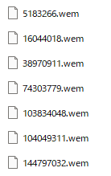
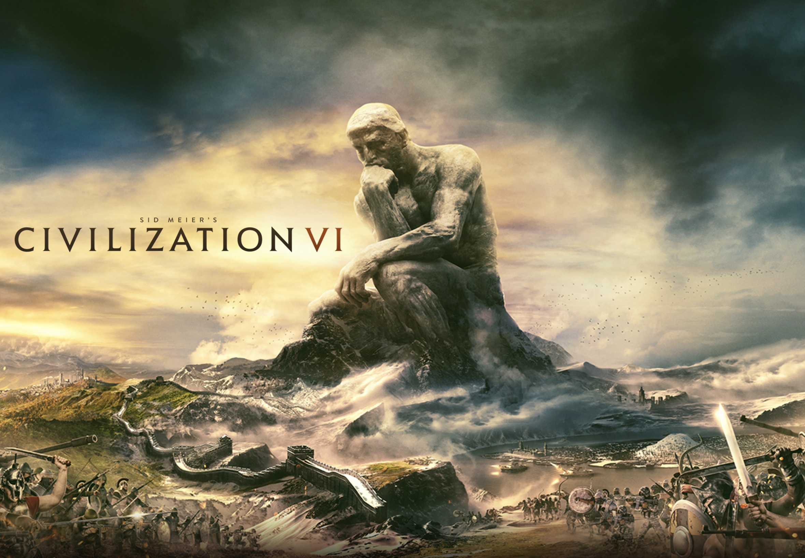

Sid Meier's Civilization Ⅵ（civ）を所持している人は、無料でオリジナルサウンドトラック（OST）を入手することができます。入手方がやや複雑なので、その方法を紹介します。各種DLCのOSTも入手できます。
バニラ文明（アメリカ、アラビア、アステカ、ブラジル、中国、エジプト、イギリス、フランス、ドイツ、ギリシャ、インド、日本、コンゴ、ノルウェー、ローマ、ロシア、スキタイ、スペイン、シュメール）のOSTはSteamの場合は
C:\Program
Files (x86)\Steam\steamapps\common\Sid Meier's
Civilization VI\DLC\Sid Meier's Civilization VI OST
に格納されています。Epic
Gamesの場合は該当するcivがインストールされたディレクトリの同様の場所を探してください。
それ以外のDLCで追加される文明は入手方法が少し複雑になります。DLCが格納されたディレクトリ（C:\Program Files (x86)\Steam\steamapps\common\Sid Meier's Civilization VI\DLC）を見れば、各種DLCの名前が付いたフォルダがあることがわかります。それぞれのフォルダのPlatforms/Windows/audioに音声ファイルが置かれています（Windowsの場合）。例えばオーストラリアならAustralia\Platforms\Windows\audioといった具合です。文明の興亡はExpansion1、嵐の訪れはExpansion2に対応しています。そのディレクトリを見ると、wemファイルが沢山あることがわかります。これが音声ファイルです。音楽の他sにも様々な効果音が含まれています。
この中に太古、中世、産業、原子力各時代の文明のテーマ曲のファイルがあります。wemファイルはそのままでは聴けない環境が殆どだと思うので、変換する必要があります。その方法を以下に記載します。
- わかりやすいように、wemファイルを他のフォルダにコピーします。
- こちらからsoundModをダウンロードしてください。ダウンロードしたら解凍し、toolsフォルダの中のファイルを全てwemファイルが入ったフォルダに移します。
- convert2ogg.batを編集します。(*.stream)の部分を(*.wem)に書き換えます。又は、次をコピペして全て上書きします。
for %%f in (*.wem) do ww2ogg.exe %%f --pcb packed_codebooks_aoTuV_603.bin編集を終えたら保存してください。
for %%f in (*.ogg) do revorb.exe %%f
pause - convert2ogg.batを実行します。そうすると変換されたoggファイルが生成されます。
- 生成されたoggファイルからOSTとなるテーマ曲を選びます。各文明各時代のテーマ曲とファイル名（番号）の対応表を載せておくので役立ててください。不明に関しては後述します。
| 文明 | ディレクトリ | 時代 | ファイル番号 | オーストラリア | Australia |
|---|---|---|---|
| 太古 | 496526209 | ||
| 中世 | 38970911 | ||
| 産業時代 | 856518652 | ||
| 原子力時代 | 634008422 | バビロン | Babylon |
| 太古 | 832648278 | ||
| 中世 | 192863332 | ||
| 産業時代 | 928076583 | ||
| 原子力時代 | 794780084 | ビザンティン | Byzantium_Gaul |
| 太古 | 不明 | ||
| 中世 | 778483001 | ||
| 産業時代 | 134896308 | ||
| 原子力時代 | 439968253 | ガリア | Byzantium_Gaul |
| 太古 | 105440421 | ||
| 中世 | 379679389 | ||
| 産業時代 | 499867570 | ||
| 原子力時代 | 543110777 | エチオピア | Ethiopia |
| 太古 | 99584679 | ||
| 中世 | 427642042 | ||
| 産業時代 | 462721722 | ||
| 原子力時代 | 929755125 | クリー | Expansion1 |
| 太古 | 945845810 | ||
| 中世 | 888706335 | ||
| 産業時代 | 6056103 | ||
| 原子力時代 | 147200677 | グルジア | Expansion1 |
| 太古 | 116264988 | ||
| 中世 | 710128902 | ||
| 産業時代 | 228987873 | ||
| 原子力時代 | 205635323 | 韓国 | Expansion1 |
| 太古 | 不明 | ||
| 中世 | 642506276 | ||
| 産業時代 | 1020383450 | ||
| 原子力時代 | 993945005 | マプチェ | Expansion1 |
| 太古 | 700477475 | ||
| 中世 | 456861623 | ||
| 産業時代 | 297884702 | ||
| 原子力時代 | 124285304 | モンゴル | Expansion1 |
| 太古 | 不明 | ||
| 中世 | 370978430 | ||
| 産業時代 | 164616794 | ||
| 原子力時代 | 831638947 | オランダ | Expansion1 |
| 太古 | 889940155 | ||
| 中世 | 865132333 | ||
| 産業時代 | 454122861 | ||
| 原子力時代 | 1014526728 | スコットランド | Expansion1 |
| 太古 | 不明 | ||
| 中世 | 316277732 | ||
| 産業時代 | 171915840 | ||
| 原子力時代 | 540643534 | ズールー | Expansion1 |
| 太古 | 1035976732 | ||
| 中世 | 971977161 | ||
| 産業時代 | 1001031483 | ||
| 原子力時代 | 277943692 | カナダ | Expansion2 |
| 太古 | 688045676 | ||
| 中世 | 964185789 | ||
| 産業時代 | 123594689 | ||
| 原子力時代 | 723405906 | ハンガリー | Expansion2 |
| 太古 | 437888856 | ||
| 中世 | 734658578 | ||
| 産業時代 | 555930267 | ||
| 原子力時代 | 97371496 | インカ | Expansion2 |
| 太古 | 306718860 | ||
| 中世 | 150962331 | ||
| 産業時代 | 32603251 | ||
| 原子力時代 | 660320982 | マリ | Expansion2 |
| 太古 | 不明 | ||
| 中世 | 72750357 | ||
| 産業時代 | 700887061 | ||
| 原子力時代 | 361137345 | マオリ | Expansion2 |
| 太古 | 1057868073 | ||
| 中世 | 477666030 | ||
| 産業時代 | 566637230 | ||
| 原子力時代 | 901306928 | オスマン | Expansion2 |
| 太古 | 1037672678 | ||
| 中世 | 157875493 | ||
| 産業時代 | 445971712 | ||
| 原子力時代 | 901911527 | フェニキア | Expansion2 |
| 太古 | 604444183 | ||
| 中世 | 491735035 | ||
| 産業時代 | 856645339 | ||
| 原子力時代 | 291559582 | スウェーデン | Expansion2 |
| 太古 | 653081382 | ||
| 中世 | 212872031 | ||
| 産業時代 | 580293855 | ||
| 原子力時代 | 735449955 | 大コロンビア | GranColombia_Maya |
| 太古 | 不明 | ||
| 中世 | 676891837 | ||
| 産業時代 | 950229318 | ||
| 原子力時代 | 1002428728 | マヤ | GranColombia_Maya |
| 太古 | 352823754 | ||
| 中世 | 891589677 | ||
| 産業時代 | 166617173 | ||
| 原子力時代 | 944052403 | インドネシア | Indonesia_Khmer |
| 太古 | 281581670 | ||
| 中世 | 353522511 | ||
| 産業時代 | 597918541 | ||
| 原子力時代 | 591616838 | クメール | Indonesia_Khmer |
| 太古 | 797552315 | ||
| 中世 | 998493457 | ||
| 産業時代 | 393830268 | ||
| 原子力時代 | 154741117 | ベトナム | KublaiKhan_Vietnam |
| 太古 | 不明 | ||
| 中世 | 220988992 | ||
| 産業時代 | 424188339 | ||
| 原子力時代 | 100912500 | マケドニア | Macedonia_Persia |
| 太古 | 164656590 | ||
| 中世 | 212345619 | ||
| 産業時代 | 409727277 | ||
| 原子力時代 | 904998597 | ペルシア | Macedonia_Persia |
| 太古 | 838994515 | ||
| 中世 | 162046214 | ||
| 産業時代 | 902358594 | ||
| 原子力時代 | 553986605 | ヌビア | Nubia_Amanitore |
| 太古 | 43808695 | ||
| 中世 | 569182330 | ||
| 産業時代 | 443450443 | ||
| 原子力時代 | 1057143009 | ポーランド | Poland_Jadwiga |
| 太古 | 不明 | ||
| 中世 | 不明 | ||
| 産業時代 | 不明 | ||
| 原子力時代 | 不明 | ポルトガル | Portugal |
| 太古 | 429717480 | ||
| 中世 | 333194308 | ||
| 産業時代 | 68070020 | ||
| 原子力時代 | 492677584 |
不明となっている部分は、変換したファイルに曲が見つからなかったためにファイルの特定ができなかった部分です。変換をしているとParse
error: expected 0x42 fmt if vord missingとなって変換できないファイルがいくつかあります。特にポーランドに関してはすべてのファイルでこうなりました。調べてもこれといった解決方法が見つからなかったので、解決方法がわかる方は教えてください。
当ページに記載の事項を実行したことによって発生した損害について、筆者は一切の責任を負いません。また、これらのファイルをアップロードすることは著作権上の問題になる可能性があります。個人利用の範囲に留めましょう。
蛇足
↑しみじみと音楽を聴いている人
参考文献
更新履歴
- 2022/12/7
- 記事作成